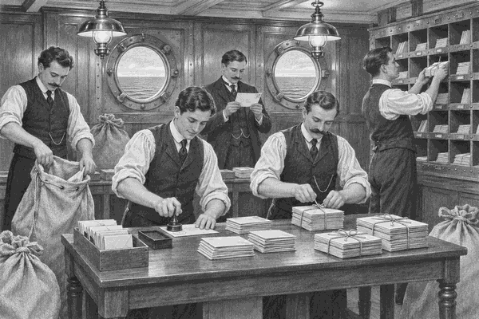

On 10 April 1912, Titanic waited at Southampton.
Passengers crossed the gangways.
Food, luggage and cargo went aboard.
Then came thousands of canvas mail sacks.
Some held letters.
Some held postcards.
Others held parcels.
Dock workers carried them through a door in the ship's side.
Thump. Lift. Thump.
Titanic was not only a passenger ship.
She was also a mail ship.
That is why her full name began with RMS.
Name fact: RMS means Royal Mail Ship. A ship could use those letters when it carried mail under a contract with the British Royal Mail.
Titanic collected more mail at Cherbourg in France.
She collected more again near Queenstown in Ireland.
By the time she sailed into the Atlantic, she carried 3,364 mail sacks.
But the sacks would not simply sit there.
Titanic had a working post office at sea.
Five sea post clerks worked inside it.
Three were American.
Two were British.
They were expert sorters.
Their sorting room had tables, pigeonholes and stamps.
The mail storage room was directly below it.
This made it easier to bring up each sack.
One clerk cut a sack open.
Letters slid across the table.
Another clerk checked their addresses.
New York.
Boston.
Chicago.
Places near and far.
The clerks turned every letter the same way.
They stamped it.
They sorted it by destination.
Then they tied matching letters into neat bundles.
Tap. Sort. Tie.
Tap. Sort. Tie.
A small card sat on top of each bundle.
It showed where the letters must go next.
Postal workers called this card a facing slip.
Sorting fact: Sea post clerks sorted letters while the ship crossed the ocean. This meant the mail could leave quickly by train or another route when the ship reached New York.
The men worked for hours each day.
The floor moved gently beneath their feet.
Above them, passengers walked the decks.
Far below, Titanic's engines beat.
Thump. Thump. Thump.
Passengers could even write a postcard on the ship.
They could give it to Titanic's post office.
The clerks would add the ship's own postmark.
On the night of 14 April, the five clerks were still aboard.
Then Titanic struck an iceberg.
Water entered the lower mail room.
The clerks hurried to save the registered mail.
Registered mail was carefully recorded and guarded.
They lifted heavy sacks towards the decks above.
But the water rose too quickly.
None of the five postal clerks survived the sinking.
Their names were Oscar Woody, John March, William Gwinn, James Williamson and John Smith.
Today, museums keep their keys, papers and other objects.
Those objects help tell a part of Titanic's story that is easy to miss.
Titanic was a great liner.
She was also a floating post office.
And five skilled clerks worked hard to carry people's words across the sea.
1. What did the letters RMS mean?
2. Why did the clerks sort mail during the voyage?
3. How many sea post clerks worked on Titanic?